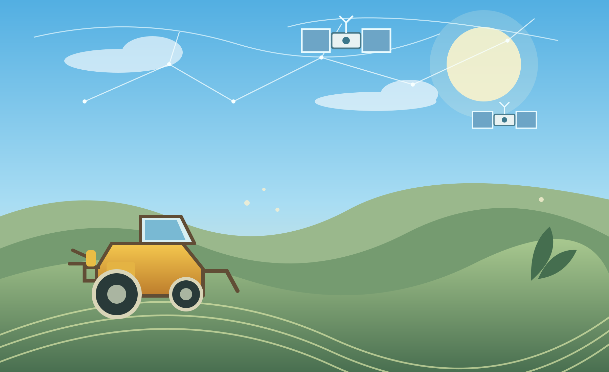
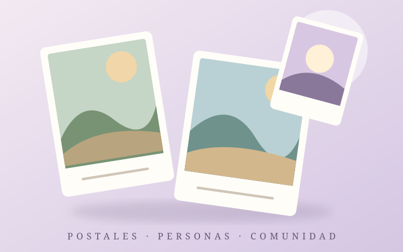
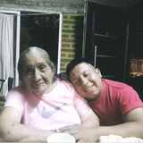

RAÍCES LOCALES · IDEAS SIN FRONTERAS
Un mundo de
SAN PATRICIO DEL CHAÑAR · TIERRA Y CIELO
Un mundo de
muchos mundos.
El campo y la tecnología se encuentran acá.
Entrar al Multiverso⌖ CARTOGRAFÍA VIVASAN PATRICIO DEL CHAÑAR · NEUQUÉN
ELEGÍ TU CAMINO
¿A dónde vamos?
Nueve puertas. Un universo para descubrir.
 ▤
▤PUERTA 01
LIBRITO
Lectura y memoria.
ENTRAR → ▶
▶PUERTA 02
OCARINA TV
Historias en imágenes.
ENTRAR → ✿
✿PUERTA 03
OCARINA WILD
Naturaleza y territorio.
ENTRAR → ?
?PUERTA 04
¿SABÍAS QUE?
Aprender jugando.
ENTRAR → ⌖
⌖PUERTA 05
CHAÑAR HUB
Encontrar y conectar.
ENTRAR → ♡
♡PUERTA 06
CÓDIGO CERO
Información y ayuda.
ENTRAR →▷
PUERTA 07
YOUTUBE
Canal de videos.
ENTRAR → ♫
♫PUERTA 08
RADIO ONLINE
Escuchar la radio.
ENTRAR →
◎PUERTA 09
OCARINA SOCIAL
Fotografías y novedades.
ENTRAR →Entrá, explorá y descubrí algo nuevo.
UN PUENTE QUE PERMANECE
CON TODO MI AMOR
Rosa Benita Bustos

Rosa Benita Bustos
Mi abuela. La persona que más amo.
Elías Martínez FundadorUniverso Ocarina nace a partir de tender puentes. La persona que más amo, Rosa Benita Bustos, mi abuela, una mujer indígena del medio del campo, sin estudios ni títulos, me tendió el puente más grande: el de creer en mí.
A ella dedico todo lo logrado y todo lo que está por venir.